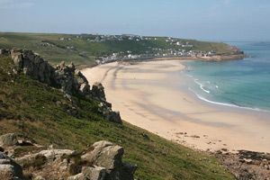

Dogs on the beach
{kind=link}
In Spring 2012, Sennen Beach was made a no dog zone between Easter at the beginning of September. While the majority are sticking by the rules, daily there are walkers with their dogs on the beach
Rod got in touch to say this;
Just returned from another week in glorious Sennen Cove. Every day (during the day) there were numerous dogs on the beach despite the prohibition. What is the point of banning dogs when the rule is not enforced?
Rod - 26th September, 2013
Responses
Strong words indeed. Pauline sent this in;
Other news
Winter storms hit Sennen
News Item
Sennen Cove has been battered by the stormy atlantic all winter. 35ft waves have been breaking into the cliffs. Thankfully there has been no local loss of life.
Spear Gun Fishing
Community Discussion
There have been a few sightings of spear gun fishing around Sennens shores. We ask for your views
I was on the beach today (Thursday) at about 2pm, and there were at least 6 dogs there. At the time, I wasn't certain if they were banned, so I didn't challenge the owners. I have now checked the facts, and they are banned between 8am and 7pm from Easter Day. Next time I will have words with these people, and I will also take photos and phone the council. You have been warned!
Pauline - 30th Sept, 2013
Patrick took a snap today and sent it in.
Clearly the no dogs beach ban is working well. This was at 11am today (see right). Unfair on those of us who observe it, perhaps it is just as well to totally ignore it.
Patrick 2nd October
The pro dog voice.
We holiday in Sennen twice a year and only go before Easter or after the end of September so we can take our dog on to the beach.Yes I agree there are some dog owners who don't clean up after their dogs, but most do. We ve come across used nappies litter and discarded broken bottles which are left by families. Could I start a ban badly behaved families with children from the beach campaign? Let dogs on the beach all year and get rid of this ridiculous ban!!!!
Dona - 18th October, 2013
Legalities of the ban
After seeing the post, Richard got in touch
Banning dogs from beaches is unenforceable. And anyway the term "beach" only relates to the portion of the shore above Mean high tide level. Everything that is seawards of this is "The foreshore". Banning dogs from this area would require an act of parliament. Even then it would just be a legal statute and not lawfully enforceable.
Richard - 21st September, 2013
Its clear that theres a strong feeling on both sides of the dog ban. Do you have a comment you'd like to share? Send us a message.
News from the web
Storm footage on YouTube
Friday, 14th February, 2014
Amatuer footage shows the enormous waves hitting Sennen, catapulting 200ft into the air. The swell coming in from the Atlantic hits the cliffs and flies over the lifeboathouse.
Source: Mail Online (via YouTube)

Are you tough enough?
Tuesday, 4th March, 2014
Some of Penwith’s most adventurous souls are gearing up for the UK’s ultimate obstacle endurance event.Tuff Enuff features 30 gruelling obstacles over a 12km course designed by Royal Marines.
Source: This is Cornwall

Lisa Lucas Art Exhibition
Thursday, 6th March, 2014
Lisa Lucas, a local artist, will be exhibiting her work at The Morvah Schoolhouse Gallery as their featured artist for March. The newly refurbished café space will host the "Hope Springs Eternal" exhibition.
Source: This is Cornwall